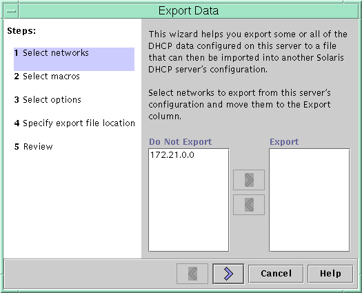
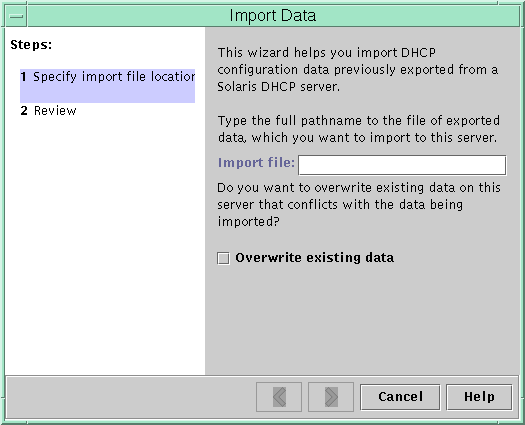

Previous
Previous
 How to Convert the DHCP Data Store (dhcpconfig
-C)
How to Convert the DHCP Data Store (dhcpconfig
-C)
Become superuser or assume a role or user name that is assigned to the DHCP Management profile.
For more information about the DHCP Management profile, see Setting Up User Access to DHCP Commands.
Roles contain authorizations and privileged commands. For more information about roles, see "Configuring RBAC (Task Map)" in System Administration Guide: Security Services.
Convert the data store by typing a command of the following format:
# /usr/sbin/dhcpconfig -C -r resource -p path
resource
is the new data store type, such as SUNWbinfiles
path
is the path to the data, such as /var/dhcp
Note that if you want to keep the original data in the old data store after the conversion, specify the -k option. For example, to convert your data store to SUNWbinfiles and save the old data store, you would type:
# /usr/sbin/dhcpconfig -C -r SUNWbinfiles -p /var/dhcp -k
See the dhcpconfig(1M) man page for more information about the dhcpconfig utility.
Moving Configuration Data Between DHCP Servers (Task Map)
DHCP Manager and the dhcpconfig utility enable you to move some or all the DHCP configuration data from one Solaris DHCP server to another server. You can move entire networks and all the IP addresses, macros, and options associated with the networks. Alternatively, you can select specific IP addresses, macros, and options to move. You can also copy macros and options without removing the macros and options from the first server.
You might want to move data if you are going to do any of the following tasks:
Add a server to share DHCP duties.
Replace the DHCP server's system.
Change the path for the data store, while still using the same data store.
The following task map identifies the procedures that you must perform when you move DHCP configuration data.
Task | Description | For Instructions |
|---|---|---|
1. Export the data from the first server. | Select the data that you want to move to another server, and create a file of exported data. | |
2. Import the data to the second server. | Copy exported data to another DHCP server's data store. | |
3. Modify the imported data for the new server environment. | Change server-specific configuration data to match the new server's information. |
In DHCP Manager, you use the Export Data wizard and the Import Data wizard to move the data from one server to the other server. You then modify macros in the Macros tab. The following figures show the initial dialog boxes for the wizards.
Figure 15-20 Export Data Wizard Dialog Box in DHCP Manager
Figure 15-21 Import Data Wizard Dialog Box in DHCP Manager
How to Export Data From a DHCP Server
(DHCP Manager)
Start DHCP Manager on the server from which you want to move or copy data.
See How to Start and Stop DHCP Manager for information about DHCP Manager.
Choose Export Data from the Service menu.
The Export Data wizard opens as shown in Figure 15-20.
Answer the wizard's prompts.
If you have difficulty, click Help for detailed information about the prompts.
Move the export file to a file system that is accessible to the DHCP server that must import the data.
See Also
Import the data as described in How to Import Data on a DHCP Server (DHCP Manager).
How to Export Data From a DHCP Server
(dhcpconfig -X)
Log in to the server from which you want to move or copy data.
Become superuser or assume a role or user name that is assigned to the DHCP Management profile.
For more information about the DHCP Management profile, see Setting Up User Access to DHCP Commands.
Roles contain authorizations and privileged commands. For more information about roles, see "Configuring RBAC (Task Map)" in System Administration Guide: Security Services.
Export the data.
You can export all of the DHCP data, or specific parts of the data.
To export specific addresses, macros, and options, type a command that uses the following format:
# dhcpconfig -X filename -a network-addresses -m macros -o options
filename is the full path name that you want to use to store the compressed exported data. You specify particular network addresses, DHCP macros, and DHCP options in comma-separated lists. The following example shows how to export specific networks, macros, and options.
# dhcpconfig -X /var/dhcp/0dhcp1065_data \ -a 10.63.0.0,10.62.0.0 \ -m 10.63.0.0,10.62.0.0,SUNW.Sun-Blade-100 -o Sterm
To export all DHCP data, type a command that uses the ALL keyword.
# dhcpconfig -X filename -a ALL -m ALL -o ALL
filename is the full path name that you want to use to store the compressed exported data. The keyword ALL can be used with the command options to export all the network addresses, macros, or options. The following example shows how to use the ALL keyword.
# dhcpconfig -X /var/dhcp/dhcp1065_data -a ALL -m ALL -o ALL
Tip - You can omit the export of a particular kind of data by not specifying the dhcpconfig command option for that type of data. For example, if you do not specify the -m option, no DHCP macros are exported.
See the dhcpconfig(1M) man page for more information about the dhcpconfig command.
Move the export file to a location that is accessible to the server that must import the data.
See Also
Import the data as described in How to Import Data on a DHCP Server (dhcpconfig -I).
How to Import Data on a DHCP Server
(DHCP Manager)
Start DHCP Manager on the server to which you want to move data that you previously exported from a DHCP server.
See How to Start and Stop DHCP Manager for information about DHCP Manager.
Choose Import Data from the Service menu.
The Import Data wizard opens, as shown in Figure 15-21.
Answer the wizard's prompts.
If you have difficulty, click Help for detailed information about the prompts.
Modify the imported data, if necessary.